Browse the Vitrine
Every piece is one of a kind. Filter by era or by type.

17th century
Antique Dragon Bracelet
Price on request
Art Deco period · French
Bird of Paradise Brooch with 50ct Emerald
Price on request
Enamel Bird of Paradise Brooch
Price on request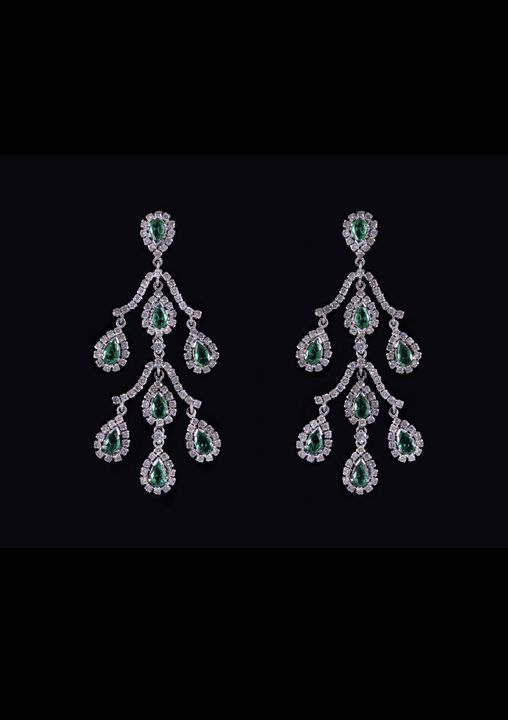
Emerald Girandole Earrings
Price on request
18th century · French
18th-Century Rose-Cut Diamond Brooch
Price on request
Vintage
Diamond Flower Bouquet Brooch
Price on request
19th century · Portuguese
Diamond Double Clip Brooch, 15ct
Price on request
Early 1900s · Portuguese
“Tremblant” Flower Bouquet Brooch
Price on request
c. 1900
Platinum Diamond Pendant, 5ct
Price on request
Vintage
Sapphire Flower Ear Clips
Price on request
19th century · Portuguese
Aquamarine Pendant, 20ct
Price on request
19th century · Portuguese
Antique Diamond Earrings
Price on request
19th century · Portuguese
Antique Ruby & Diamond Brooch
Price on request
c. 1920
Diamond Drop Earrings, 9ct
Price on request
16th – 17th century · Portuguese
Antique Chrysoberyl Earrings
Price on request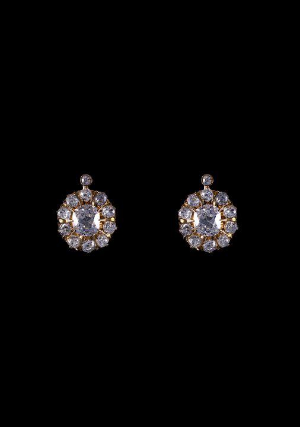
Late 19th century · Portuguese
Old Mine-Cut Diamond Earrings, 4ct
Price on request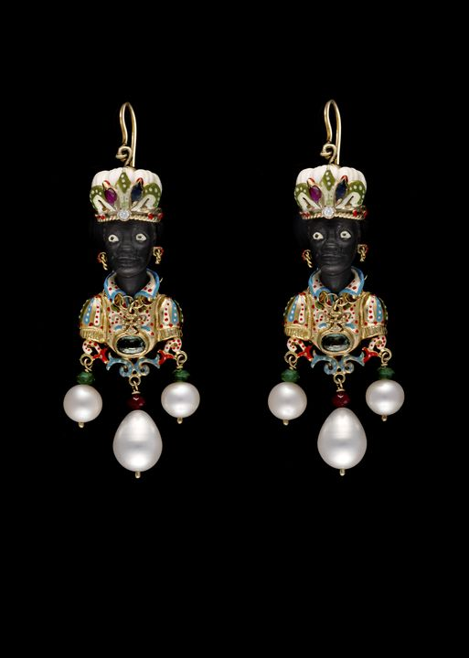
19th century
Nardi-Style Earrings
Price on request
c. 1920
Diamond & Briolette Ruby Earrings
Price on request
Vintage
Garnet Torsade Necklace
Price on request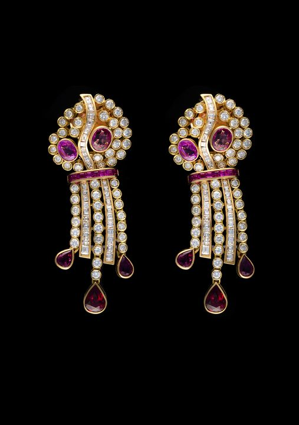
Late 19th century · Portuguese
Gold, Ruby & Diamond Earrings
Price on request
Art Deco period · Portuguese
Art Deco Pearl Choker
Price on request
c. 1920 · Italian
Art Deco Diamond Earrings, 3ct
Price on request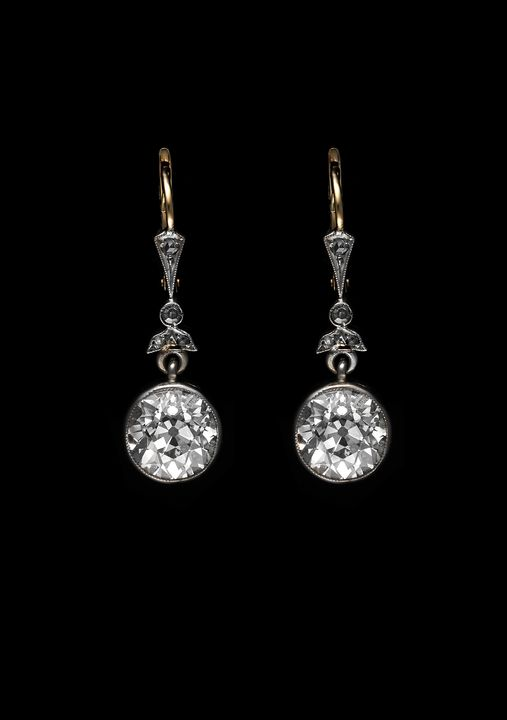
19th century · Portuguese
Antique Diamond Earrings, 5ct
Price on request
1950s · Portuguese
Angel Wings Diamond Necklace
Price on request
Signed Van Cleef & Arpels
Van Cleef & Arpels Sapphire Ring
Price on request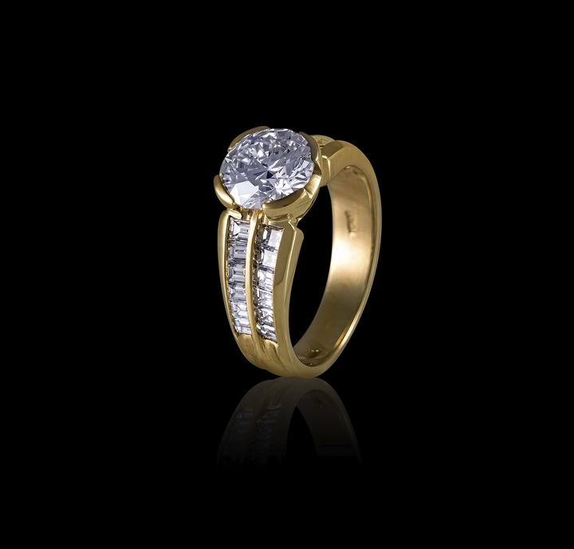
Signed Damiani
Damiani Diamond Ring
Price on request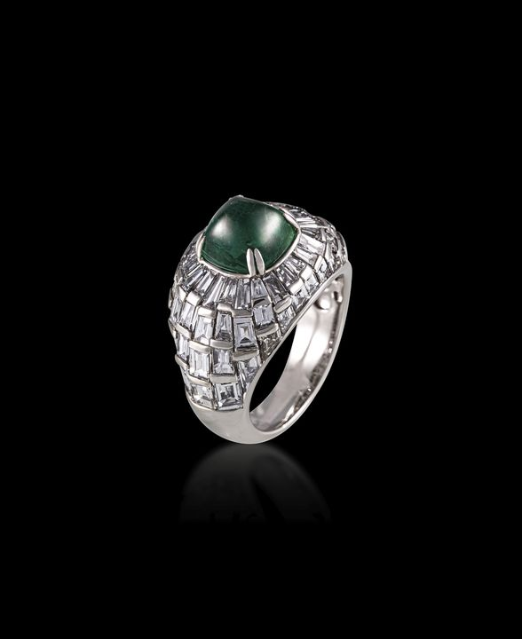
Emerald Cabochon & Baguette Diamond Ring
Price on request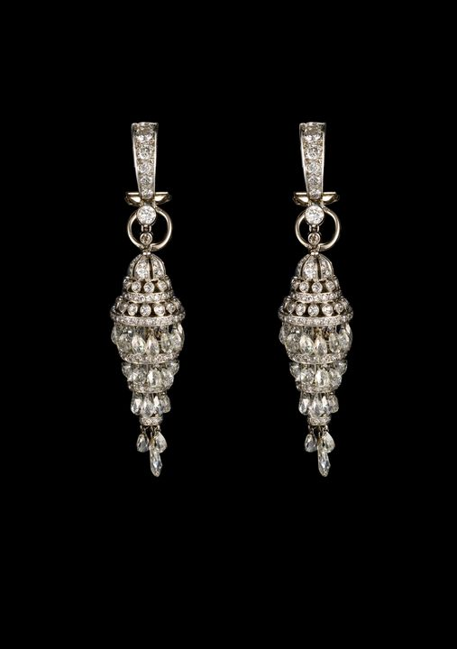
c. 1920
Diamond Chandelier Earrings, 15ct
Price on request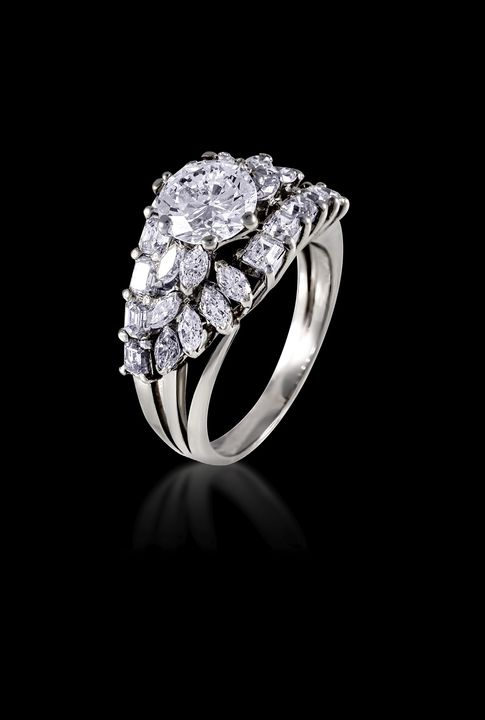
Vintage
Diamond Ring, 1.52ct
Price on request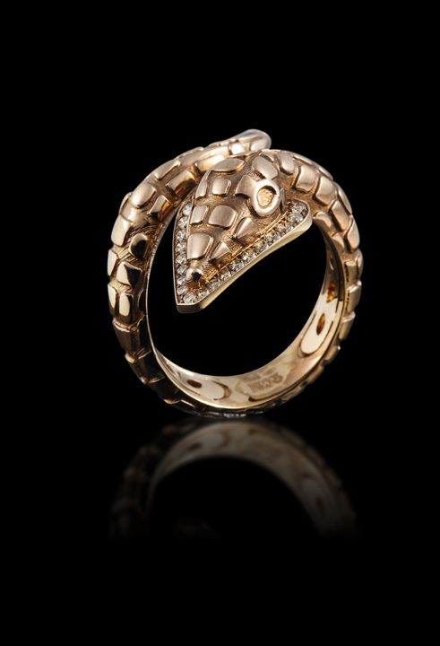
c. 1900
Antique Serpent Ring
Price on request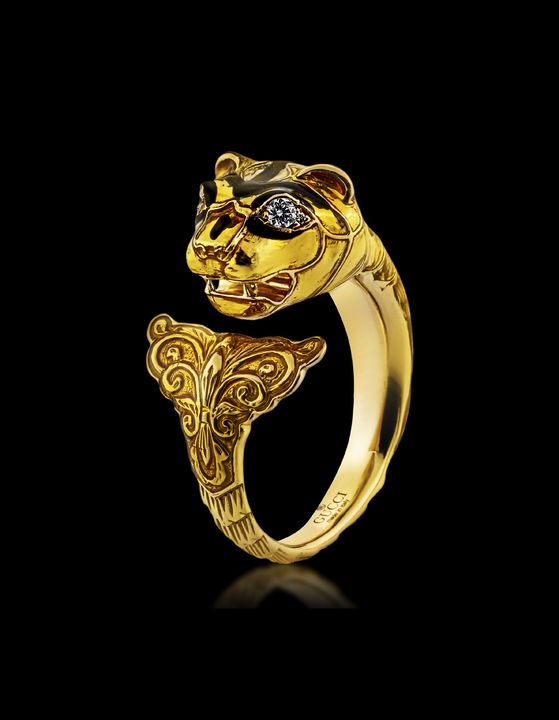
Signed Gucci
Gucci Panther Ring
Price on request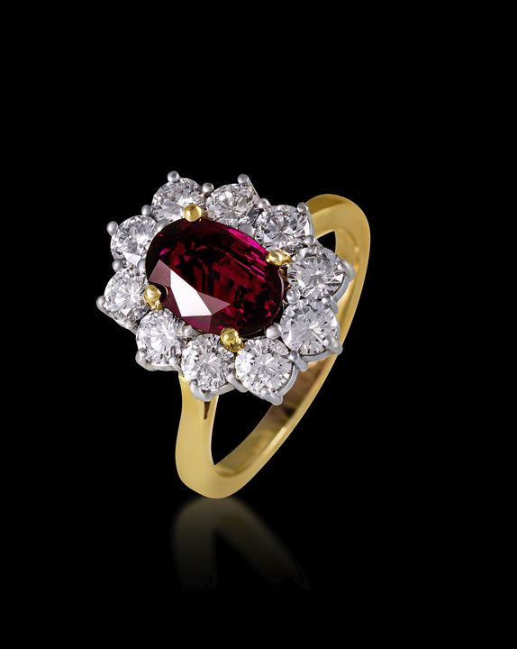
Ruby & Diamond Ring, 2ct
Price on request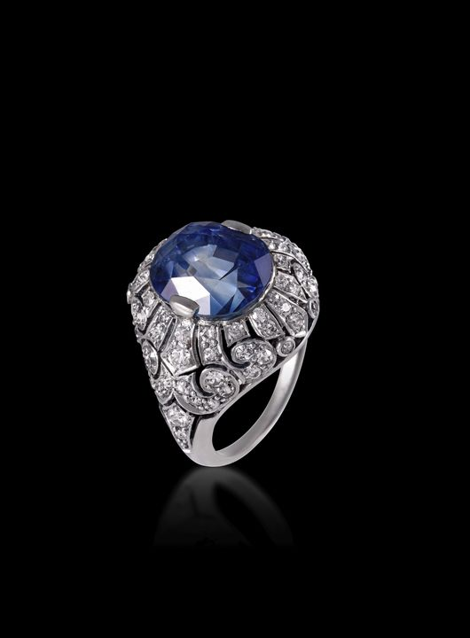
Antique · French
Sapphire Dome Ring, 10ct
Price on request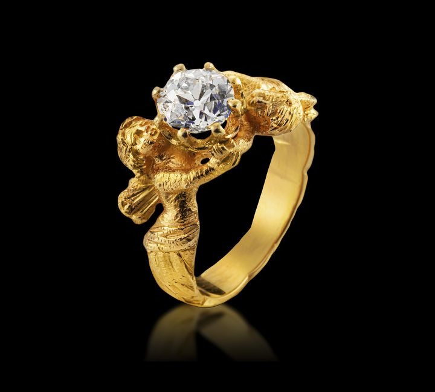
Angel Diamond Ring, 1.50ct
Price on request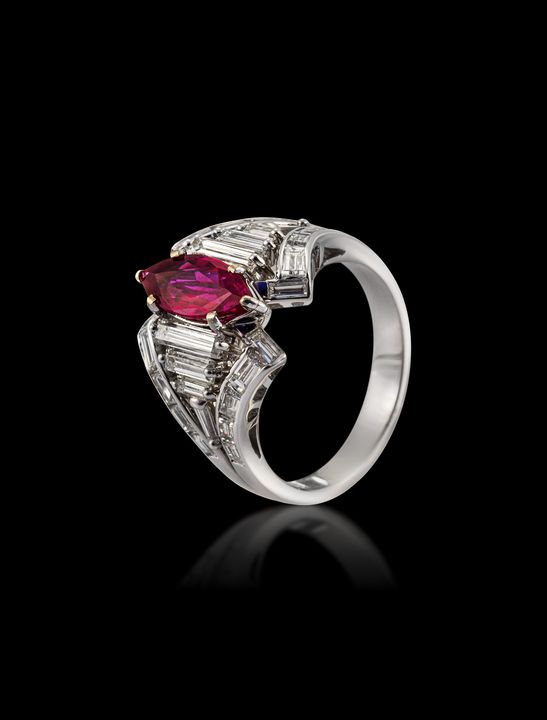
Marquise Ruby Ring, 2ct
Price on request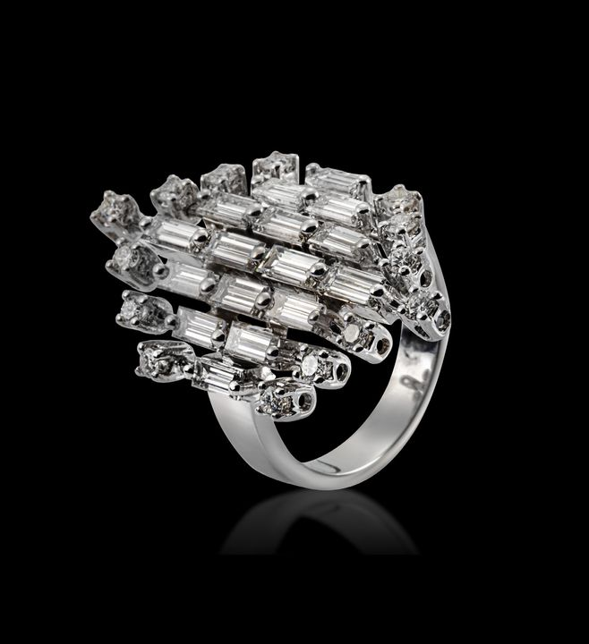
Platinum Diamond Ring, 3ct
Price on request
c. 1900 · Portuguese
Diamond Bracelet
Price on request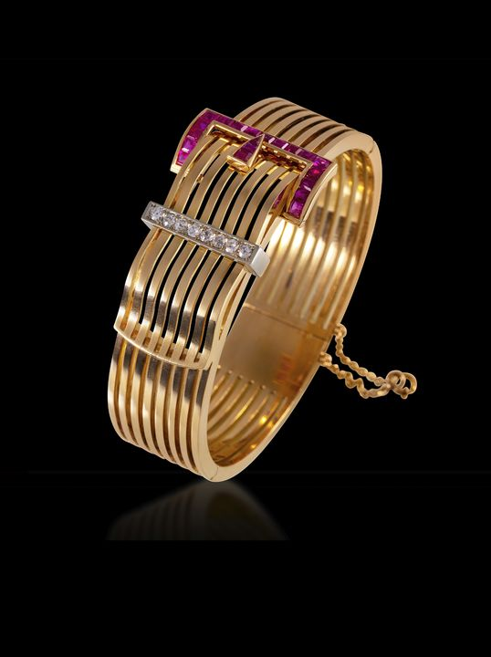
c. 1920 · Portuguese
Art Deco Buckle Bracelet
Price on request
17th century · Portuguese
Antique Reliquary Pendant
Price on request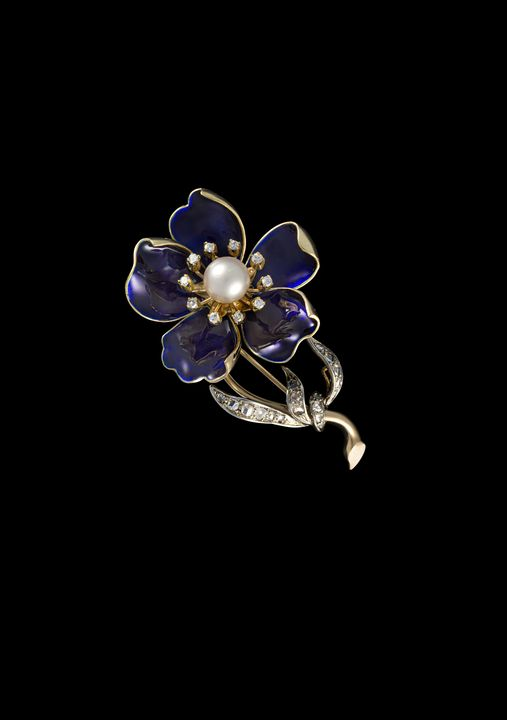
Enamel Flower Brooch
Price on request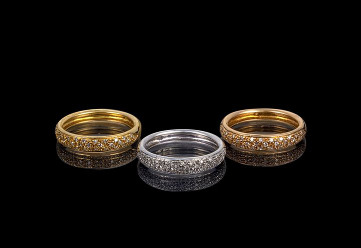
Trio of Diamond Rings
Price on request
c. 1900 · Portuguese
Handmade Gold Bracelet
Price on request
18th – 19th century · Portuguese
Antique Brooch with Brown Diamonds & Natural Pearl
Price on request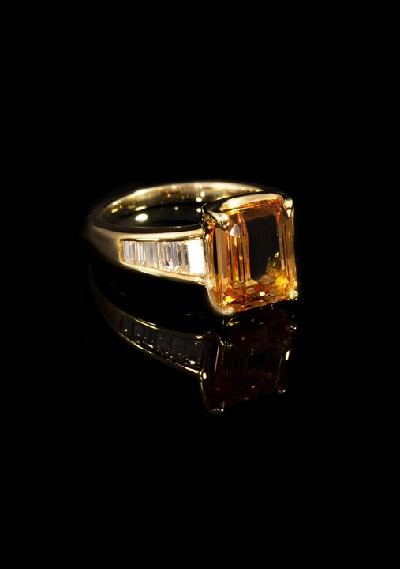
Signed H. Stern
H. Stern Imperial Topaz Ring
Price on request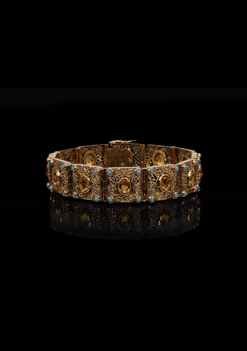
c. 1900 · Portuguese
Filigree Bracelet with Citrines & Turquoise
Price on request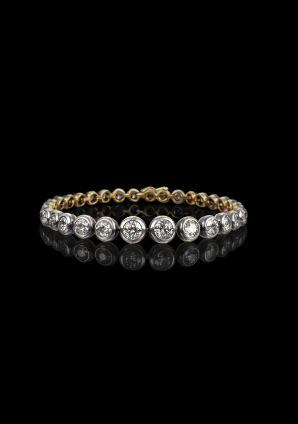
19th century · Portuguese
Antique Diamond Bracelet, 5ct
Price on request
1940s · Signed Boucheron
Boucheron Braid Bracelet
Price on request
c. 1950 · Italian
Italian Gold & Diamond Bracelet
Price on requestNo pieces in this selection yet.